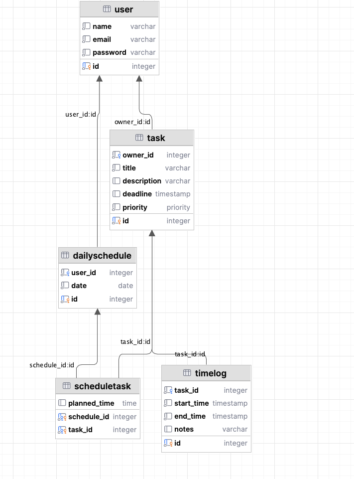
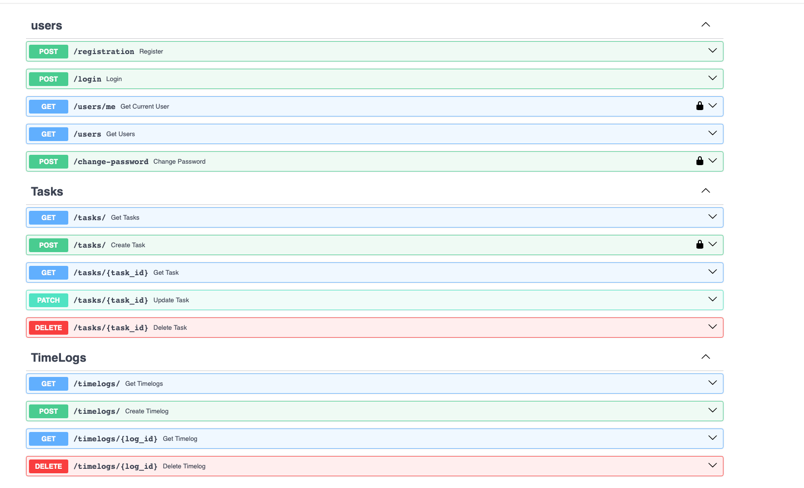
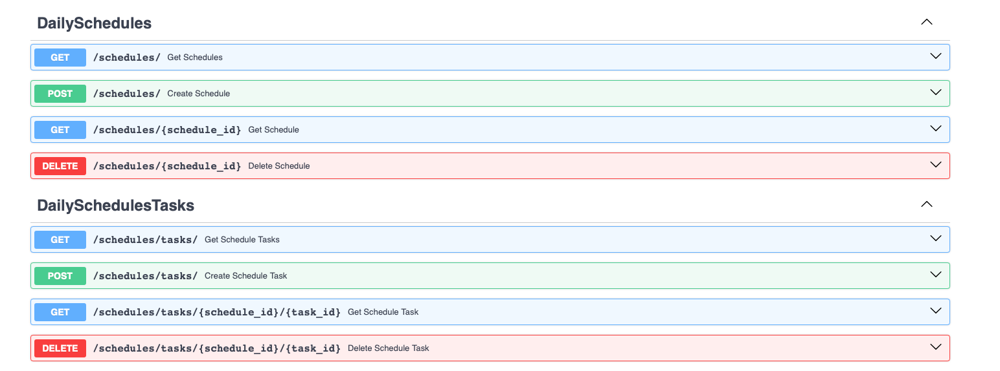

Лабораторная работа 1. Реализация серверного приложения FastAPI
Тема:
Разработка веб-приложения для поиска партнеров в путешествие.
Ход работы:
Схема базы данных:

Файл models.py
from datetime import datetime, date, time
from typing import Optional, List
from enum import Enum
from sqlmodel import SQLModel, Field, Relationship
class Priority(str, Enum):
low = "low"
medium = "medium"
high = "high"
class User(SQLModel, table=True):
id: Optional[int] = Field(default=None, primary_key=True)
name: str
email: str
password: str
tasks: List["Task"] = Relationship(back_populates="owner")
schedules: List["DailySchedule"] = Relationship(back_populates="user")
class Task(SQLModel, table=True):
id: Optional[int] = Field(default=None, primary_key=True)
owner_id: int = Field(foreign_key="user.id")
title: str
description: Optional[str] = None
deadline: Optional[datetime] = None
priority: Priority = Priority.medium
owner: Optional[User] = Relationship(back_populates="tasks")
time_logs: List["TimeLog"] = Relationship(back_populates="task")
schedule_items: List["ScheduleTask"] = Relationship(back_populates="task")
class TimeLog(SQLModel, table=True):
id: Optional[int] = Field(default=None, primary_key=True)
task_id: int = Field(foreign_key="task.id")
start_time: datetime
end_time: datetime
notes: Optional[str] = None
task: Optional[Task] = Relationship(back_populates="time_logs")
class DailySchedule(SQLModel, table=True):
id: Optional[int] = Field(default=None, primary_key=True)
user_id: int = Field(foreign_key="user.id")
date: date
user: Optional[User] = Relationship(back_populates="schedules")
items: List["ScheduleTask"] = Relationship(back_populates="schedule")
class ScheduleTask(SQLModel, table=True):
schedule_id: int = Field(foreign_key="dailyschedule.id", primary_key=True)
task_id: int = Field(foreign_key="task.id", primary_key=True)
planned_time: Optional[time] = None
schedule: Optional[DailySchedule] = Relationship(back_populates="items")
task: Optional[Task] = Relationship(back_populates="schedule_items")
Файл connection.py
import os
from dotenv import load_dotenv
from sqlmodel import SQLModel, Session, create_engine
load_dotenv()
db_url = os.getenv('DB_URL')
engine = create_engine(db_url, echo=True)
def init_db():
SQLModel.metadata.create_all(engine)
def get_session():
with Session(engine) as session:
yield session
Файл task_endpoints.py
from typing import List
from fastapi import APIRouter, Depends, HTTPException
from sqlmodel import Session, select
from auth.auth import AuthHandler
from db.connection import get_session
from model.models.models import Task
from model.schemas.task import TaskRead, TaskCreate, TaskUpdate
task_router = APIRouter()
auth_handler = AuthHandler()
@task_router.post("/", response_model=TaskRead)
def create_task(task: TaskCreate, session: Session = Depends(get_session),
current_user=Depends(auth_handler.get_current_user)):
db_task = Task(**task.model_dump(), owner_id=current_user.id)
session.add(db_task)
session.commit()
session.refresh(db_task)
return db_task
@task_router.get("/", response_model=List[TaskRead])
def get_tasks(session: Session = Depends(get_session)):
return session.exec(select(Task)).all()
@task_router.get("/{task_id}", response_model=TaskRead)
def get_task(task_id: int, session: Session = Depends(get_session)):
task = session.get(Task, task_id)
if not task:
raise HTTPException(status_code=404, detail="Task not found")
return task
@task_router.patch("/{task_id}", response_model=TaskRead)
def update_task(task_id: int, update: TaskUpdate, session: Session = Depends(get_session)):
task = session.get(Task, task_id)
if not task:
raise HTTPException(status_code=404, detail="Task not found")
update_data = update.model_dump(exclude_unset=True)
for key, value in update_data.items():
setattr(task, key, value)
session.commit()
session.refresh(task)
return task
@task_router.delete("/{task_id}", response_model=dict)
def delete_task(task_id: int, session: Session = Depends(get_session)):
task = session.get(Task, task_id)
if not task:
raise HTTPException(status_code=404, detail="Task not found")
session.delete(task)
session.commit()
return {"ok": True}
Файл schemas.task
from datetime import datetime
from typing import Optional
from pydantic import BaseModel
from model.models.models import Priority, User
class TaskBase(BaseModel):
title: str
description: Optional[str] = None
deadline: Optional[datetime] = None
priority: Optional[Priority] = Priority.medium
class TaskCreate(TaskBase):
pass
class TaskUpdate(BaseModel):
title: Optional[str] = None
description: Optional[str] = None
deadline: Optional[datetime] = None
priority: Optional[Priority] = None
class TaskRead(TaskBase):
id: int
owner: Optional["User"] = None
class TaskReadShort(BaseModel):
id: int
title: str
deadline: Optional[datetime] = None
priority: Priority
Эндпоинты в Swagger

